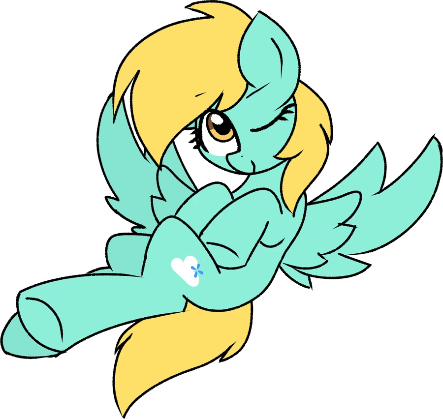
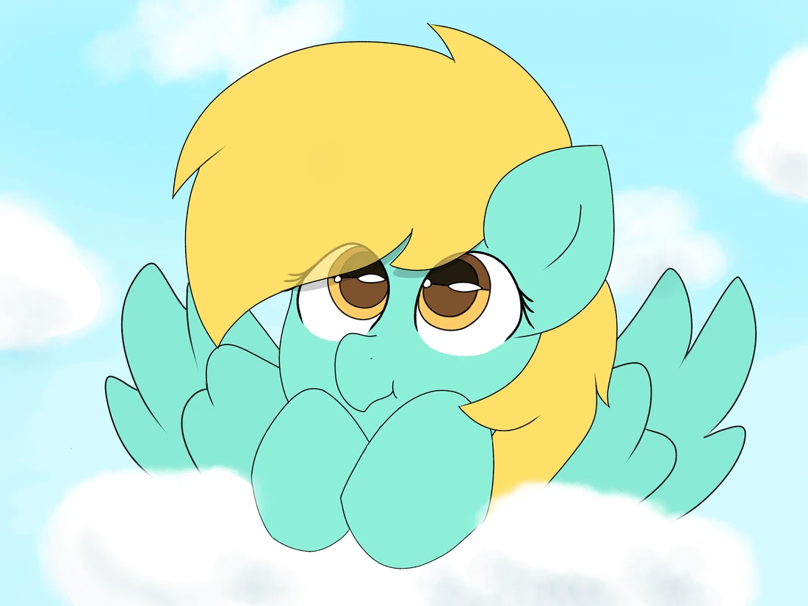

Equestria / Cloudsdale
Cloudsdale
I’m Skyblue Mornbreeze, a little blue pegasus living in Cloudsdale.
Meet Skyblue
Skyblue Mornbreeze Sketchbook MailboxFrom the journal
Call me Skyblue
I’m Skyblue Mornbreeze, a little blue pegasus living in Cloudsdale.
In the Brony community I also go by Pegasus Bluie. My friends call me Tianlan, Little Blue, or just Skyblue.
My Lyra Heartstrings plush comes along on photo walks. Back home, I practice drawing, write pony stories, and experiment with electronic music.
In the human world I study robotics at Tongji University. One day I’d love to build a robot pony like Sweetiebot.
Listen to my playlist